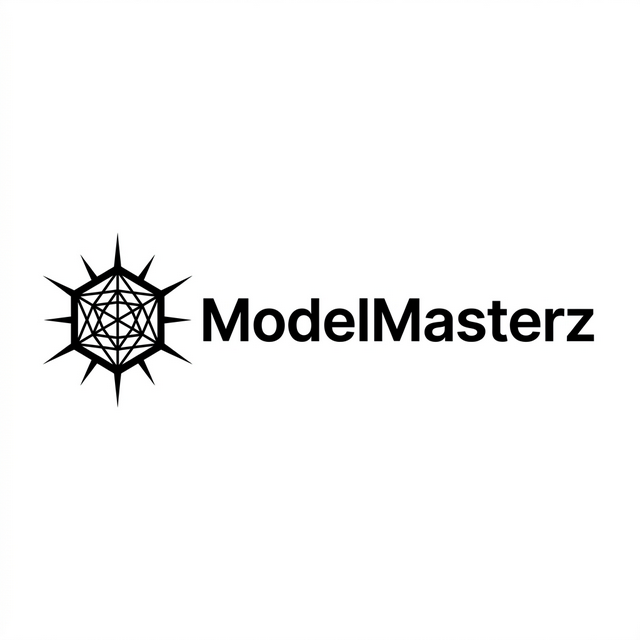

Senior-side challenges
- May not be near the physical button.
- Audio can be weak or incomplete.
- Dialect barriers reduce clarity.

ModelMasterzPersonal Alert Plus is an AI-assisted extension of Singapore's Personal Alert Button ecosystem, designed to improve access, assessment, and response quality.
Our focus is not replacing existing emergency infrastructure; it is closing communication and prioritisation gaps that appear during real incidents.
It adds accessible trigger channels for seniors and provides operators with confidence-scored assessment support, while preserving full human override.
Telegram text and voice trigger path
Existing hardware infrastructure
Transcription, language detection, risk classification
Review, override, dispatch, and action logging
Detects language/dialect and extracts key distress signals fast.
Analyses distress tone and message severity to prioritise risk.
Sends confirmation prompts and routes follow-up based on confidence.
Shows confidence, assessment, and action hints for quick human decision.
Sample input: "I fell and cannot stand up."
AI classification: Urgent risk.
System action: Family notified, case escalated to operations immediately.
Benefit: Faster handling of life-threatening incidents.
Sample input: "I feel weak and need someone to check on me."
AI classification: Non-urgent follow-up.
System action: Family informed, routed for operator follow-up.
Benefit: Appropriate care without over-escalation.
Sample input: "I feel dizzy but I think I am okay."
AI classification: Uncertain confidence.
System action: Confirmation flow and timeout safety check.
Benefit: Safer handling when confidence is low.
Sample input: "Sorry, I pressed wrongly."
AI classification: False alarm.
System action: No unnecessary escalation, escalation option still available.
Benefit: Cleaner queue and reduced operator load.
These flows show the end-to-end integration across Telegram, the AI assessment layer, and the operator dashboard.
Sample input: "I fell and cannot stand up."
AI classification: Urgent risk.
System action: Family notified, case escalated to operations immediately.
Benefit: Faster handling of life-threatening incidents.
Sample input: "I feel weak and need someone to check on me."
AI classification: Non-urgent follow-up.
System action: Family informed, routed for operator follow-up.
Benefit: Appropriate care without over-escalation.
Sample input: "I feel dizzy but I think I am okay."
AI classification: Uncertain confidence.
System action: Confirmation flow and timeout safety check.
Benefit: Safer handling when confidence is low.
Sample input: "Sorry, I pressed wrongly."
AI classification: False alarm.
System action: No unnecessary escalation, escalation option still available.
Benefit: Cleaner queue and reduced operator load.
We will first demo an uncertain case, then an urgent dialect case, followed by operator review and audit trail.
Senior sends an uncertain alert. AI starts follow-up prompts to collect more context before escalation.
A dialect voice alert is translated and analyzed for distress signals. It is marked urgent based on risk context, then urgent actions are triggered.
Operator reviews AI outputs, key signals, and case context, then confirms the final response action.
Every AI and operator action is captured with timestamps for full traceability and governance.
AI recommends, operators decide, and manual override is always available.
Low-confidence cases trigger confirmation and timeout safety checks.
AI actions and operator actions are fully logged with timestamps.
Urgent cases are surfaced first so operators can focus on high-impact response.
AI for Good is not AI replacing care. It is AI helping care reach people faster, more safely, and more fairly.
Direct WhatsApp & SMS integration.
Deep sync with physical PAB smart-home hubs.
AI model learns from previous cases to better categorize.
Personal Alert Plus: an AI-assisted extension of Personal Alert Button for safer, faster, and more inclusive emergency support.